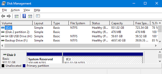
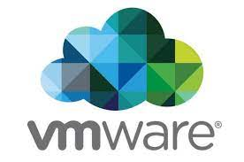

Eminion's Blog
About Me
I am a 14 year old "Developer" I am learning C, and after that I am planning to learn Java or C++
02/07/2023


So, I finally insalled Fedora on a disk partition, and I started programming a simple game to help people learn linux, so, of course I created a git repo for each of my projects, including my Neovim config, my web page and my game called Torvalds Legacy, you can find all of them in my github profile Eminion14, so if you want, visit my profile and create some pull requests, and download, etc., do some classic, github stuff.
21/06/2023
I made a PowerPoint presentation, and my parents gave me permission to install Fedora on a partition, The only condition is I wait 1 more week until I finish this school year (8th grade btw), if you are considering the same, and you either have doubts or you are in my same situation, I recomend to do reaserch and analyze every possibility, and if you are in my situation do the same as me or whatever you want I honestly can't say anything more.
14/06/2023
I have decided to download fedora on a partition, or if my parents don't like the idea, I will install it on an external HDD or SDD because I have both, because I took them out of an old computer when I needed to change them, and yea, I would recomendo you to try a distro natively after you try them in a VM.
08/06/2021

I will be trying different Linux distros to determine qhich one I want to install, I will start with Debian because it is a very general purpose distro, I have allready tried Kali, hich I liked a lot but I also want to try different ones, mybe even including Arch Linux, I recomend anyone that is getting into Linux to do the same and eventually dual boot or replace your current system, I can't do that because I need MS Windows for school, but I will replace my system when I get to High School, if I don't need it...
06/10/2023
Today I switch my VM platform to VMware because virtualbox is just so slow and I value speed a lot I recomend anyone starting in the VM insustry to start with virtualbox just to get your feet wet with virtual machines, but if you are going to use them regularly I would recomend VMware or QEMU because they are more eficient and have more features that virtualbox doesn't, but in VMware specifically most of them require pro, I personaly dont use pro I can get by without it so yea thats it.
05/06/2023
I have been learning C for about 2 months now and I just started learning functions and I think they are very usefull in many use cases.
04/06/2023

Today I learned How to use div and how to surce images and other files like style.css or app.js